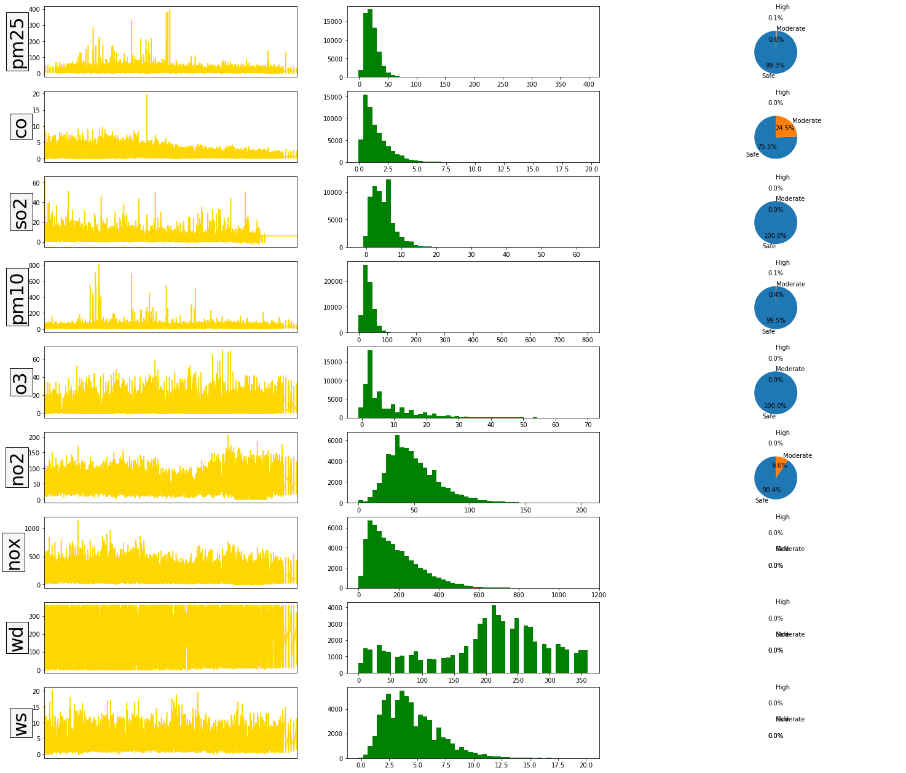

Summary Plot¶
The summaryPlot function is a way of rapidly summarising important aspects of data. While many statistical summaries are possible to calculate with Python, the summaryPlot function has been written specifically for monitoring data. The function provides key graphical and statistical summaries.
Standard libraries to be imported for usage
[1]:
import pandas as pd
from vayu import summaryPlot
[2]:
import warnings
warnings.filterwarnings('ignore')
Reading the data and using the function from the library.
[3]:
df = pd.read_csv('../data/mydata.csv')
summaryPlot(df)
---------------
pm25
min = 0
max = 398.0
missing = 8775
mean = 21.6953434697581
median = 20.0
95th percentile = 43.0
---------------
co
min = 0
max = 19.705
missing = 1936
mean = 1.463839514210789
median = 1.14
95th percentile = 3.7
---------------
so2
min = 0
max = 63.205
missing = 10450
mean = 4.754910588376007
median = 4.0
95th percentile = 11.292916999999994
---------------
pm10
min = 0
max = 801.0
missing = 2162
mean = 34.38185634033958
median = 31.0
95th percentile = 64.0
---------------
o3
min = 0
max = 70.0
missing = 2589
mean = 7.122150380478815
median = 4.0
95th percentile = 23.0
---------------
no2
min = 0
max = 206.0
missing = 2438
mean = 49.12975671606308
median = 46.0
95th percentile = 93.0
---------------
nox
min = 0
max = 1144.0
missing = 2423
mean = 178.79855807320553
median = 153.0
95th percentile = 414.0
---------------
wd
min = 0
max = 360.0
missing = 219
mean = 200.02709985607987
median = 210.0
95th percentile = 340.0
---------------
ws
min = 0
max = 20.16
missing = 632
mean = 4.488274857884358
median = 4.1
95th percentile = 9.0

[ ]: